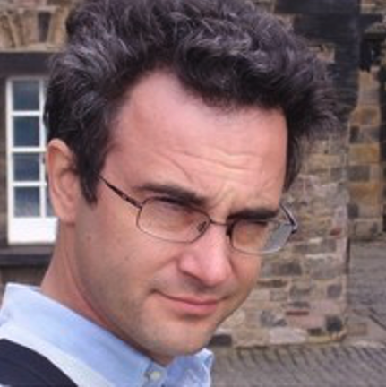
Carlo Cavallotti
Politecnico di Milano (PoliMi), Italy
Since its first edition in 1985, the International Conference
on Chemical Kinetics (ICCK) has brought together researchers from universities,
research laboratories, and industry to discuss advances and challenges in the
experiment, theory, and modeling of chemical kinetics.
ICCK provides a unique cross-disciplinary forum centered on the fundamental
understanding of elementary reactions and reaction mechanisms, connecting communities
that investigate chemical transformations under remarkably different conditions—from
gases and liquids to plasmas, surfaces, and solid materials.
The 14th ICCK, hosted by Politecnico di Milano, will continue this tradition while
highlighting the increasingly important role of chemical kinetics in addressing
challenges in energy, sustainability, the environment, and advanced materials.
We look forward to welcoming the international chemical kinetics community to Milan in June 2027.
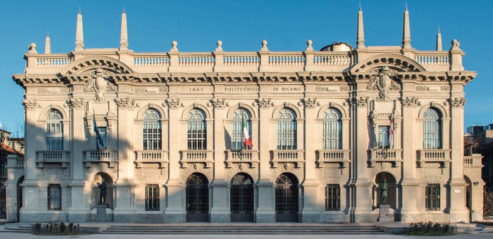
| Abstract submission opens | November 1 2026 |
| Submission deadline | February 15 2027 |
| Registrations open | December 1 2026 |
| Early bird registrations end | April 15 2027 |
| Standard registrations end | June 1 2027 |
| On-site registrations end | June 13 2027 |
| Conference | June 13-18 2027 |
Authors will be notified by March 15 2027, or shortly after, whether their abstract has been accepted for an oral presentation or a poster presentation, or has not been accepted.
ICCK 2027 welcomes experimental, theoretical, and modeling contributions across the broad field of chemical kinetics, including:
Abstracts will be submitted through a portal.
Presentation and poster submissions follow the same format. Selection between the two is available in the
portal.
Abstracts should include:
Plenary speakers will be announced soon
Keynote speakers will be announced soon
The Wing Tsang Early Career Award recognizes the contributions of an early career researcher in the field of chemical kinetics. This prestigious award is presented biennially at the ICCK meeting, during which the recipient will also present the Wing Tsang Early Career Investigator Plenary Lecture.
The award recognizes excellence in chemical kinetics research, the potential for future leadership in the field, and service to the kinetics community.
The award is named in honor of Wing Tsang (1935–2026), a pioneer in chemical kinetics investigations and a founder, together with John T. Herron, of the International Conference on Chemical Kinetics in 1985.
Wing Tsang’s outstanding technical contributions to chemical kinetics during his 51-year career at the National Institute of Standards and Technology (NIST) centered on combustion chemistry and shock tube experiments. His leadership was also key in creating the evaluated chemical kinetics databases that continue to have tremendous impact on the broader kinetics community.
Nomination deadline:
Nomination packages should include:
Nomination packages should be sent to Craig Taatjes, chair of the Wing Tsang Award Committee, at cataatj@sandia.gov.
Self-nominations are not permitted. Members of the ICCK Standing Committee may not nominate or support a candidate.
Donations are being solicited to fund this award for the next 20 years, in honor of Wing Tsang and to encourage excellence in chemical kinetics. For information about making a donation, please contact the ICCK Treasurer, Bill Green, at whgreen@mit.edu.

Carlo Cavallotti
Politecnico di Milano (PoliMi), Italy
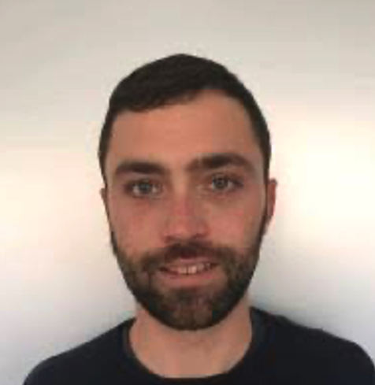
Matteo Pelucchi
Politecnico di Milano (PoliMi), Italy
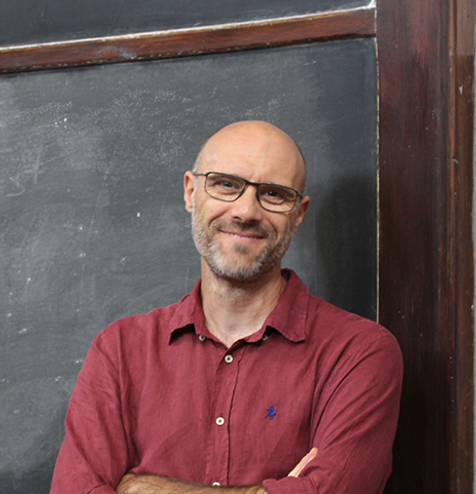
Marco Mehl
Politecnico di Milano (PoliMi), Italy
Davide Moscatelli
Politecnico di Milano (PoliMi), Italy
Luna Pratali Maffei
Politecnico di Milano (PoliMi), Italy
Maristella Di Teodoro
Politecnico di Milano (PoliMi), Italy
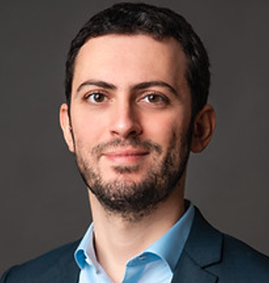
Gianvito Vilè
Politecnico di Milano (PoliMi), Italy
Mattia Sponchioni
Politecnico di Milano (PoliMi), Italy
Daniela Polino
Scuola universitaria professionale della Svizzera italiana (SUPSI), Switzerland
Università di Bologna (UniBo), Italy
University of Antwerp, Belgium
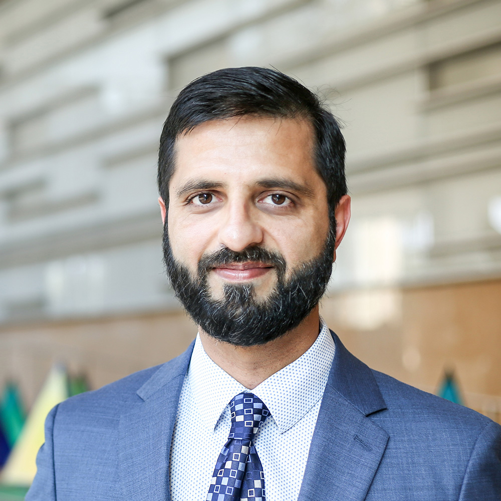
King Abdullah University of Science and Technology (KAUST), Saudi Arabia
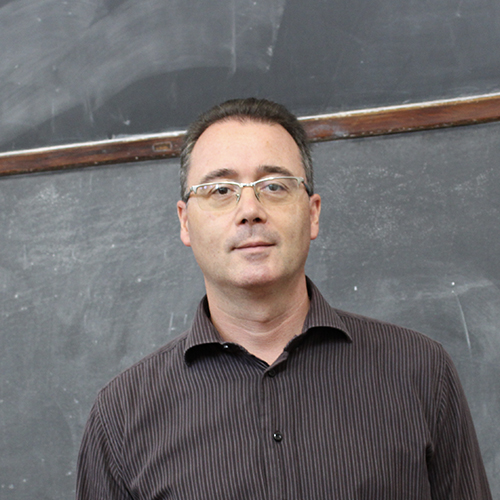
Politecnico di Milano (PoliMi), Italy
Consiglio Nazionale delle Ricerche (CNR) – Istituto di Scienze e Tecnologie per l’Energia e la Mobilità Sostenibili (STEMS), Italy
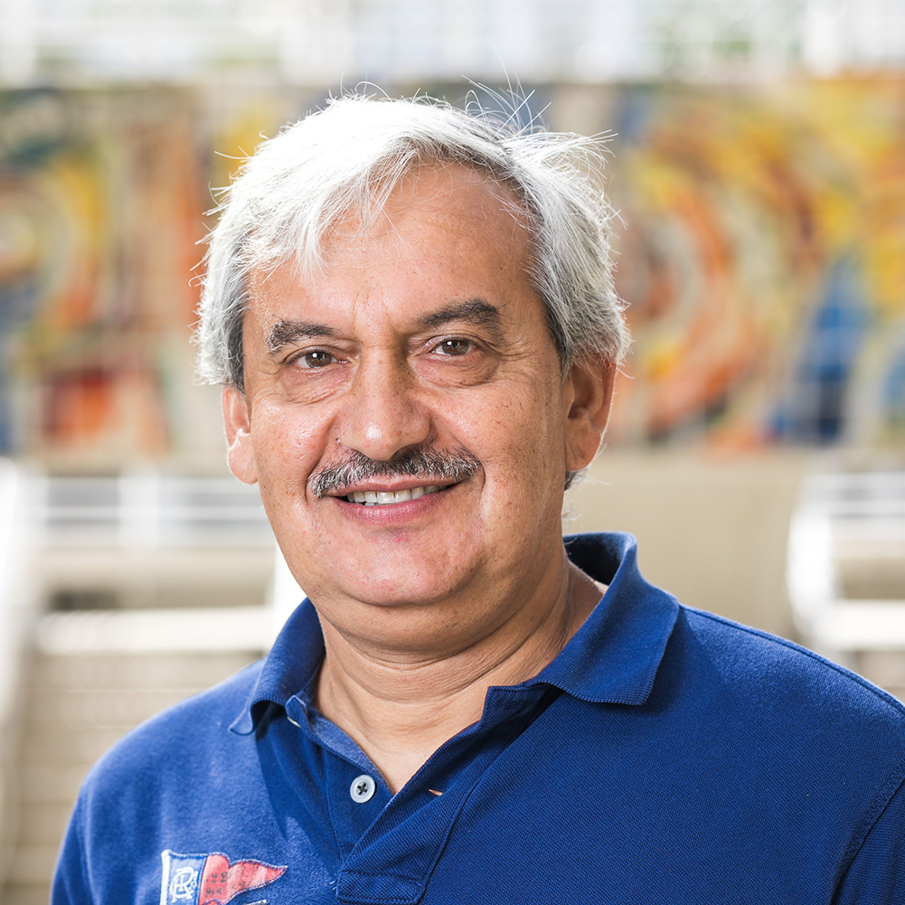
Florida International University (FIU), USA
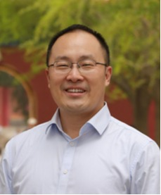
Tsinghua University, China
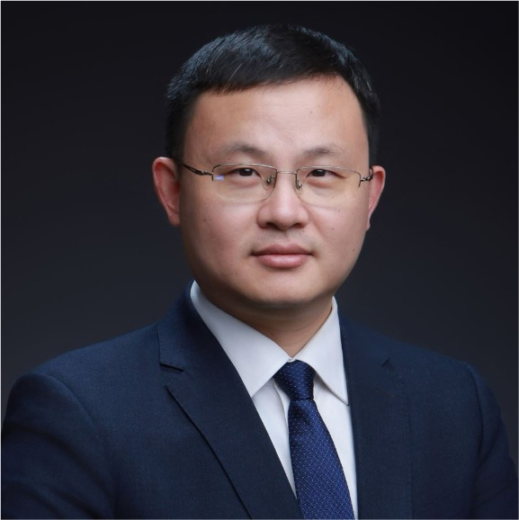
Shanghai Jiao Tong University (SJTU), China
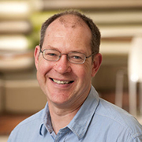
University of Leeds, UK
Sandia National Laboratories (SNL), USA
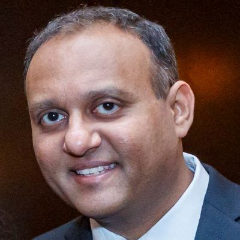
Argonne National Laboratory (ANL), USA
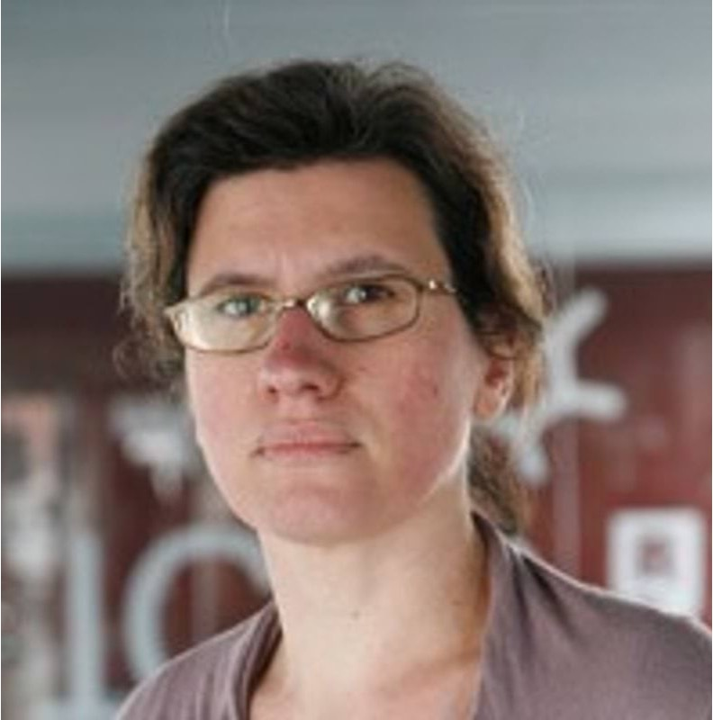
Institute of Chemical Research of Catalonia (ICIQ), Spain
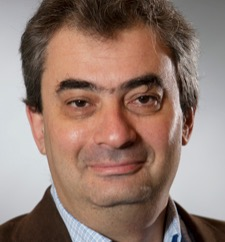
Åbo Akademi University, Finland
The detailed program will be available here soon
| Morning | Afternoon | ||
| Day 1 — June 13th | Lunch | Welcome reception | |
| Day 2 — June 14th | Welcome, plenary, oral presentations | Lunch | Oral presentations, poster presentations and happy hour |
| Day 3 — June 15th | Plenary, oral presentations | Lunch | Wing Tsang plenary, oral presentations, poster presentations and happy hour |
| Day 4 — June 16th | Plenary, oral presentations | Lunch | Excursion |
| Day 5 — June 17th | Plenary, oral presentations | Lunch | Oral presentations, social dinner |
| Day 6 — June 18th | Plenary, oral presentations | Lunch |
| Regular, early bird, registering by April 15 2027 | € 650 |
| Regular, standard, registering between April 15 2027 and June 1 2027 | € 750 |
| Regular, on-site, registering after June 1 2027 | € 900 |
| Student, early bird, registering by April 15 2027 | € 450 |
| Student, standard, registering between April 15 2027 and June 1 2027 | € 550 |
| Student, on-site, registering after June 1 2027 | € 650 |
Politecnico di Milano
Campus Leonardo (Città Studi), building 13
Via Edoardo Bonardi 9
Milan, 20133, Italy
Open on Google Maps
The conference will be held at Politecnico di Milano, in building 13 (“Trifoglio”),
shown on the map. Access to the building is from via Bonardi. Plenary sessions will
be held on the second floor, while other sessions and the poster sessions will be
held on the ground floor
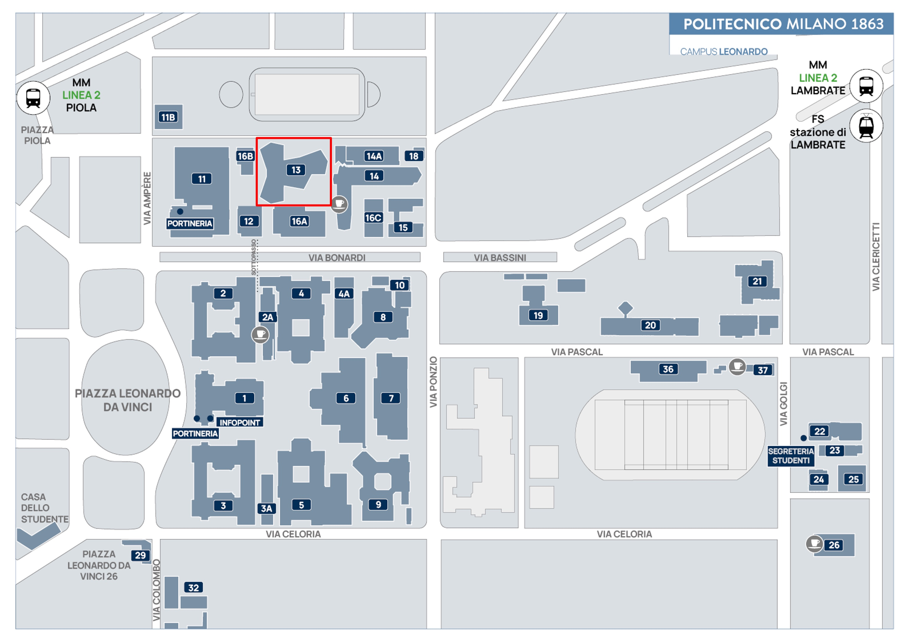
How to reach the venue by public transport:
By train
By plane
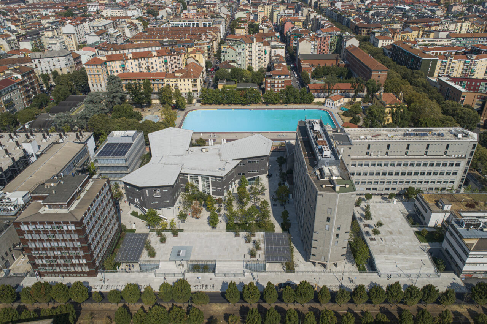
For any questions, contact the organisers at ICCK2027@mzevents.it.